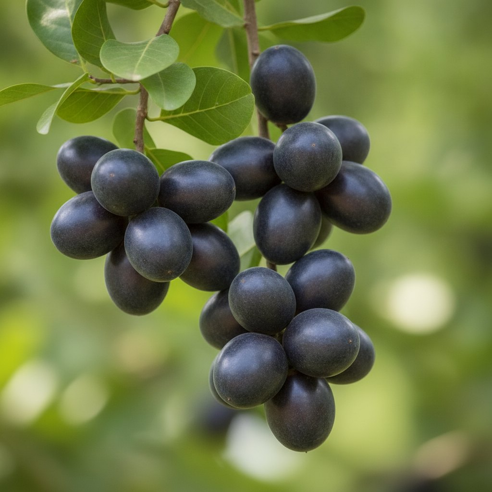

Safou le fruit violet de la Likouala.
Cueilli mûr sur l'arbre, vendu frais pendant la saison et transformé le reste de l'année. Un fruit que peu d'exploitations proposent hors du Congo.
La fiche.
Chaque ligne porte son statut. Les crochets ne sont pas des oublis, ce sont les questions à poser à l'exploitation.
OrigineIbenga · Likouala
Saison[ mois ] à confirmer
FormeFrais · transformé
Transformation[ à préciser ] séché, pâte, huile
Conservation du frais[ jours ] à fournir
Conditionnements[ à fournir ]
Volume par saison[ à fournir ]
Expédition du frais[ à confirmer ] selon destination
De l'arbre à vous.
Trois moments. Les photographies réelles de chaque étape sont à faire sur place.
I
L'arbre
Le safoutier donne une fois l'an. Les fruits passent du rose au violet foncé quand ils sont prêts.

II
La cueillette
Cueilli à la main, à maturité. Le safou ne se conserve pas longtemps frais, tout se joue en quelques jours.
III
Le voyage
Frais vers les villes proches, transformé pour aller plus loin. Le procédé de transformation est à documenter.
Formes et conditionnements.
- Frais[ conditionnement à fournir ]
- Transformé[ forme à fournir ]
- ÉchantillonFrais en saison · transformé hors saison
- Disponibilité[ mois ] à confirmer
Pour qui
Épiceries africainesRestaurationDiasporaTransformateurs
Safous sur feuille · image d'illustration

Confluence de deux rivières · septembre 2021